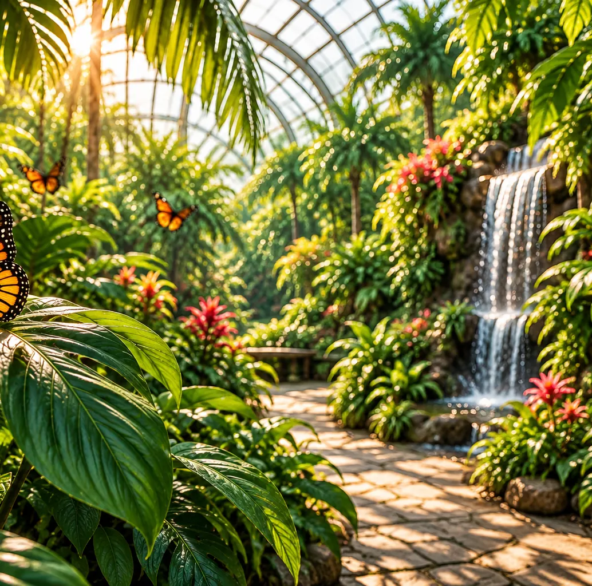
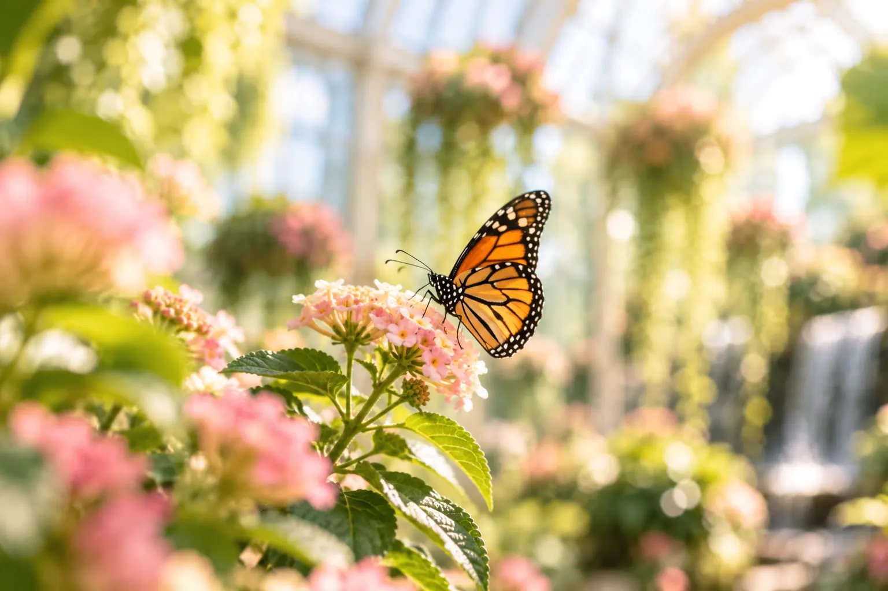
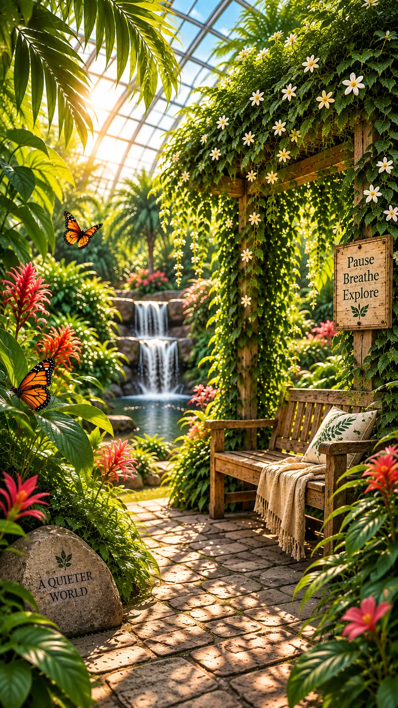
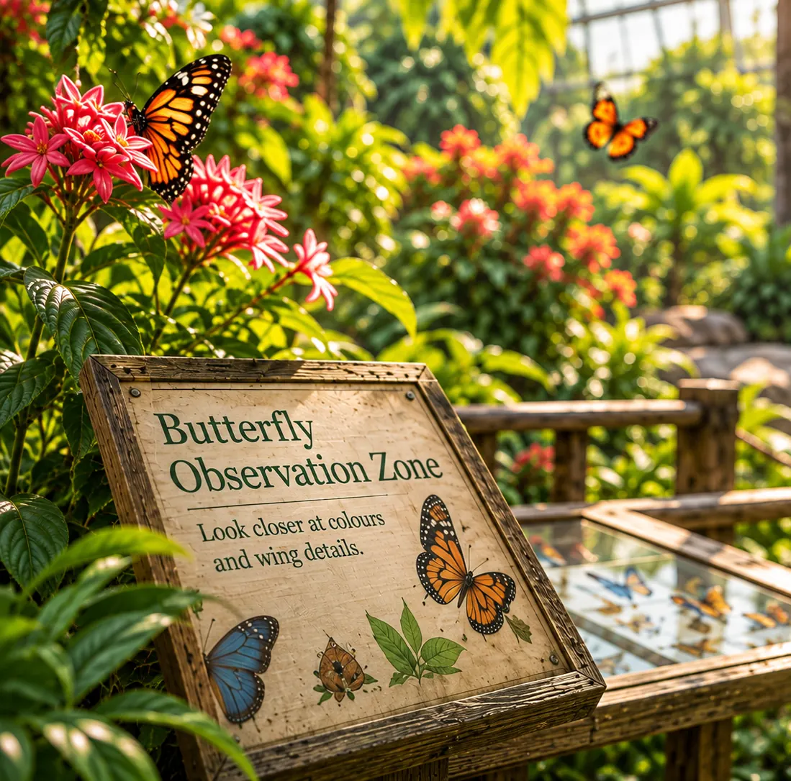
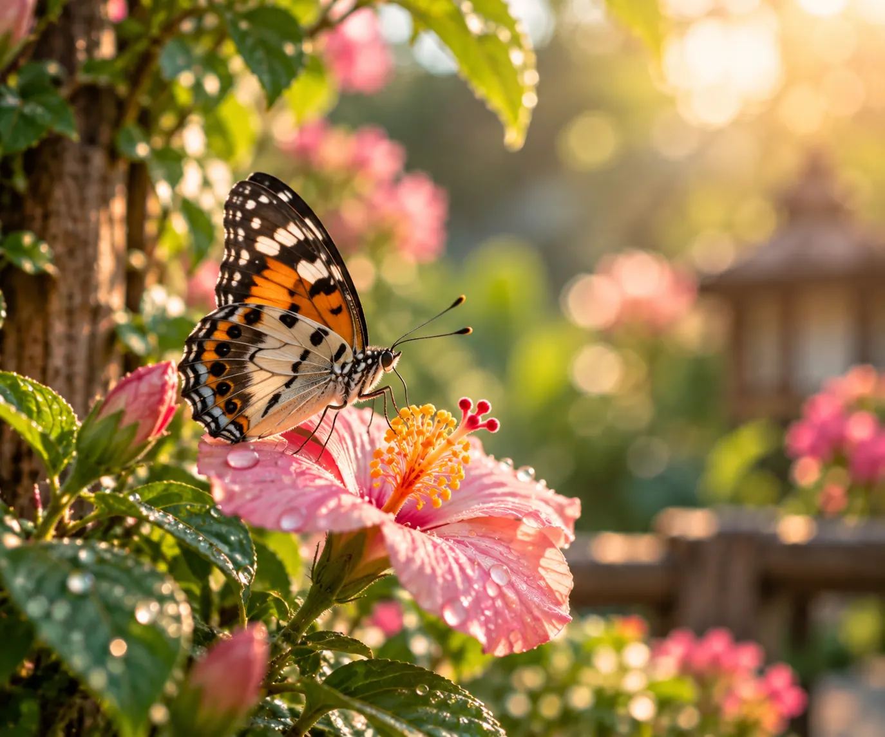
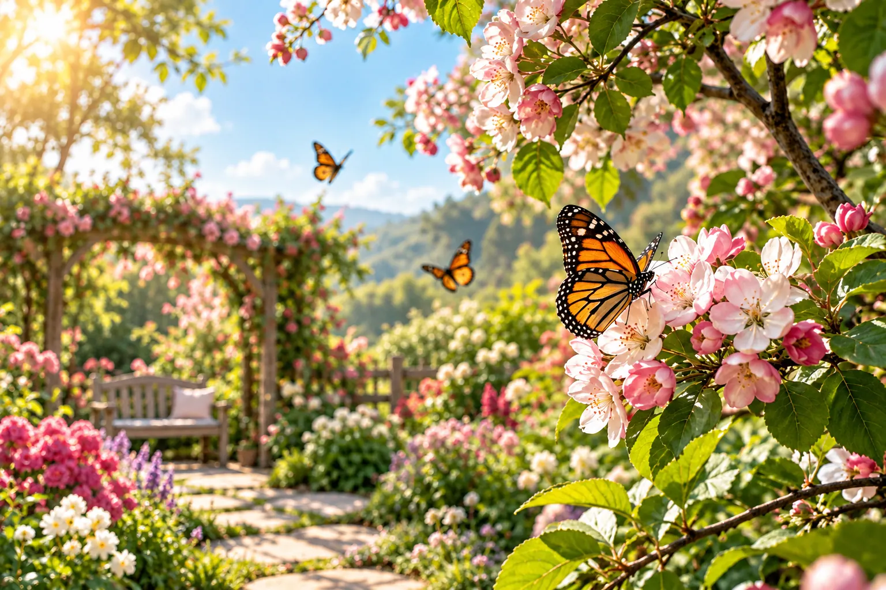
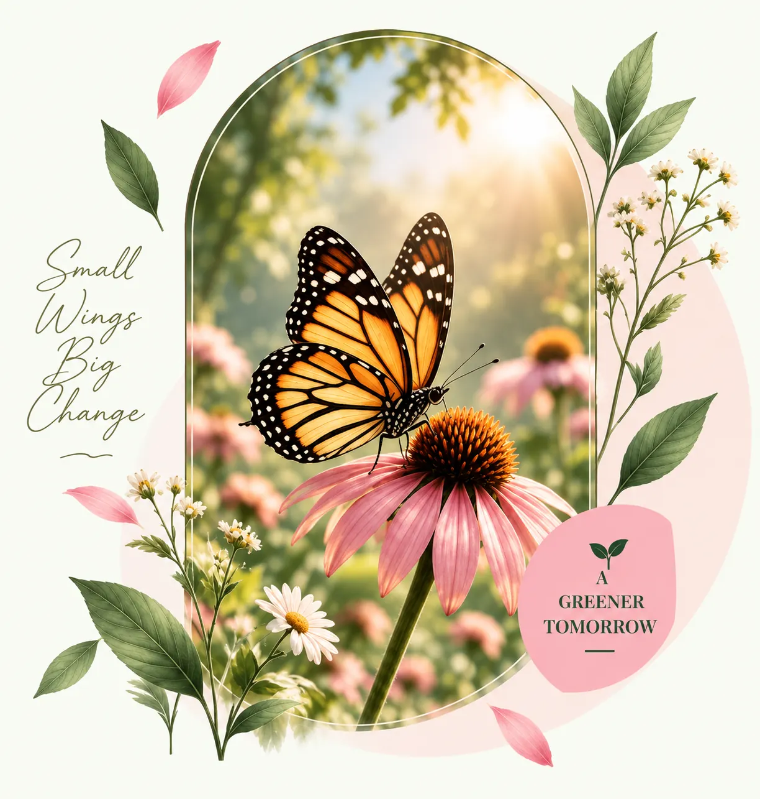
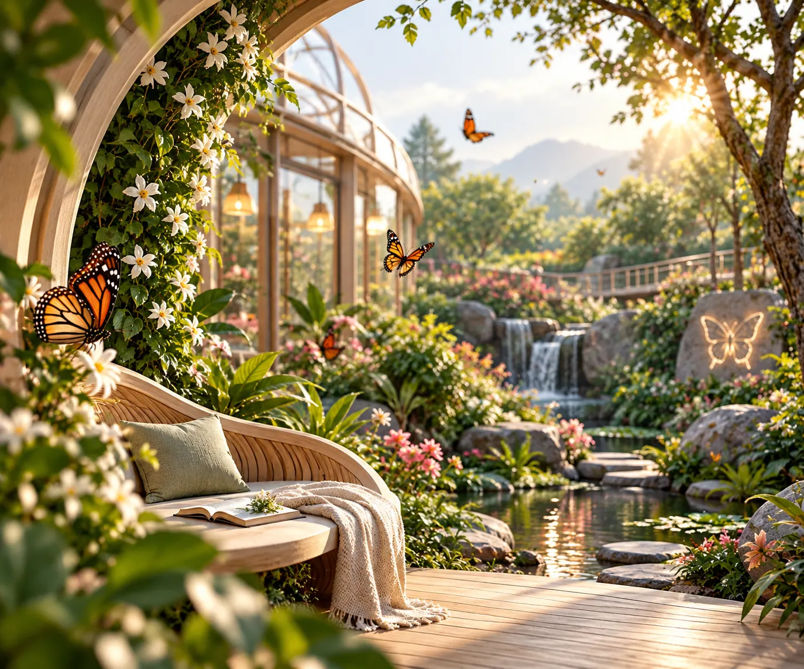
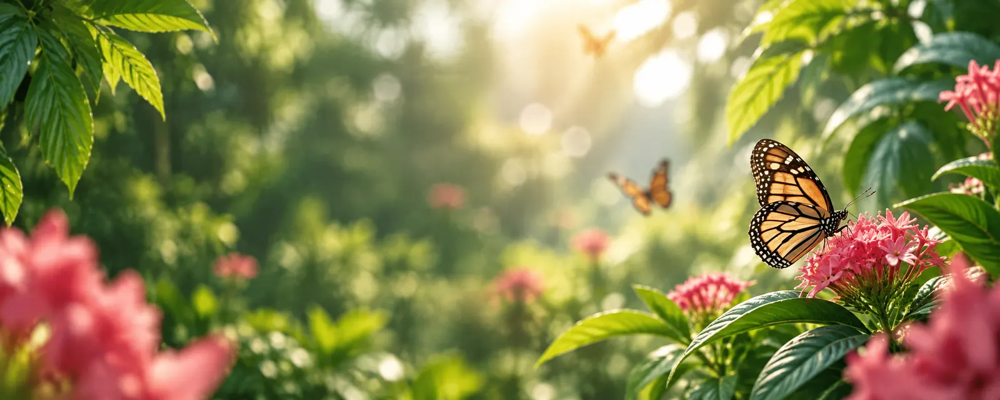

01
Tropical Canopy
Walk beneath layers of tropical greenery.
WHERE NATURE TAKES FLIGHT
Step into warm tropical air, flowering gardens and a living world of butterflies moving freely around you. Wander through peaceful pathways filled with vibrant blooms and discover nature up close. Every visit brings a new moment of wonder.

Thousands of butterfliesINSIDE THE CONSERVATORY
Every turn reveals something different — tropical greenery, feeding butterflies, quiet corners and beautiful places to stop and observe.

Walk beneath layers of tropical greenery.

Watch butterflies gather around blooms.

Find a peaceful place to slow down.

Look closer at colours and wing details.

BUTTERFLY ENCOUNTERS
Slow down and discover the extraordinary details hidden within every wing, movement and quiet butterfly encounter.
Discover remarkable colours, markings and delicate wing patterns.
Watch butterflies glide naturally between tropical flowers.
Quiet observation can create some of your most memorable garden moments.
BLOOM CALENDAR
Follow the changing colours of the conservatory and discover how each season brings its own personality to the garden.

New growth and nectar-rich flowers bring fresh colour throughout the conservatory, creating beautiful feeding spaces for butterflies.
BEHIND THE WINGS
Behind every beautiful visitor experience is thoughtful daily care for butterflies, plants and the habitats they depend on.
Daily observation supports healthy butterfly activity. Our care team closely monitors their behaviour, feeding habits and surroundings to help every butterfly thrive.
Carefully selected plants support different stages of butterfly life. From tiny caterpillars to beautiful butterflies, these plants provide essential food, shelter and safe spaces to grow.

Warmth, shelter and natural balance shape the environment. Carefully maintained habitats provide comfortable spaces where butterflies can rest, feed and flourish naturally.
Flowers and tropical greenery receive careful attention every day. Regular watering, pruning and thoughtful care keep the garden healthy, vibrant and welcoming for butterflies throughout the year.
A DAY AT WING & BLOOM
There is no need to rush. Follow a gentle day through the conservatory and make time for the little moments that stay with you.

Begin slowly and take in the atmosphere of the garden.
Wander through free-flight spaces filled with colour and movement.
Find a quiet place among the tropical plants and slow down.
Notice the smaller details, behaviours and garden stories.
Take one final peaceful walk before your visit comes to an end.

YOUR VISIT AWAITS
Come wander beneath tropical leaves, meet extraordinary butterflies and make memories surrounded by the beauty of nature.
Plan Your Visit